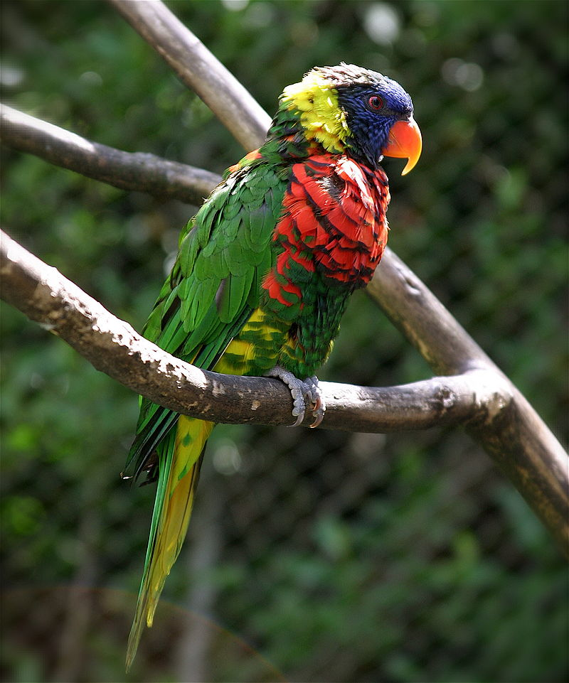

Лориевые (попугаи)

Лориевые, или ло́ри (лат. Loriinae) — подсемейство попугаевых. Некоторые систематики выделяют в отдельное семейство Loriidae.
Внешний вид
Маленькие, ярко окрашенные во все цвета радуги, древесные попугаи.
Распространение
Обитают в Австралии, на Новой Гвинее, востоке Индонезии и Филиппинах.
Образ жизни
Питаются преимущественно пыльцой и нектаром (приблизительно от 5000 разновидностей цветков), а также мягкими, сочными плодами. Язык у них оканчивается щёточкой из роговых сосочков. С их помощью птицы высасывают сок из плодов и нектар из цветов.
Размножение
Гнездятся в дуплах деревьев, несколько видов — в термитниках.